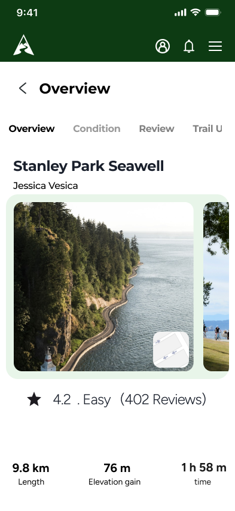
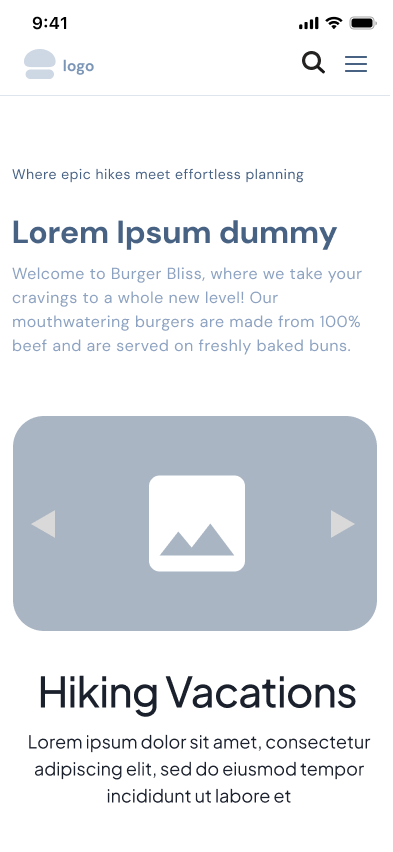
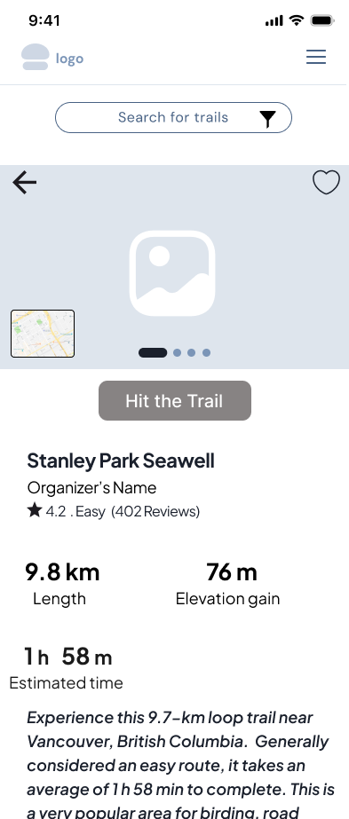
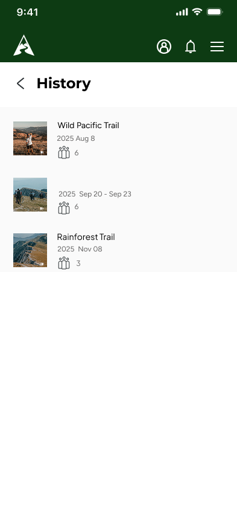
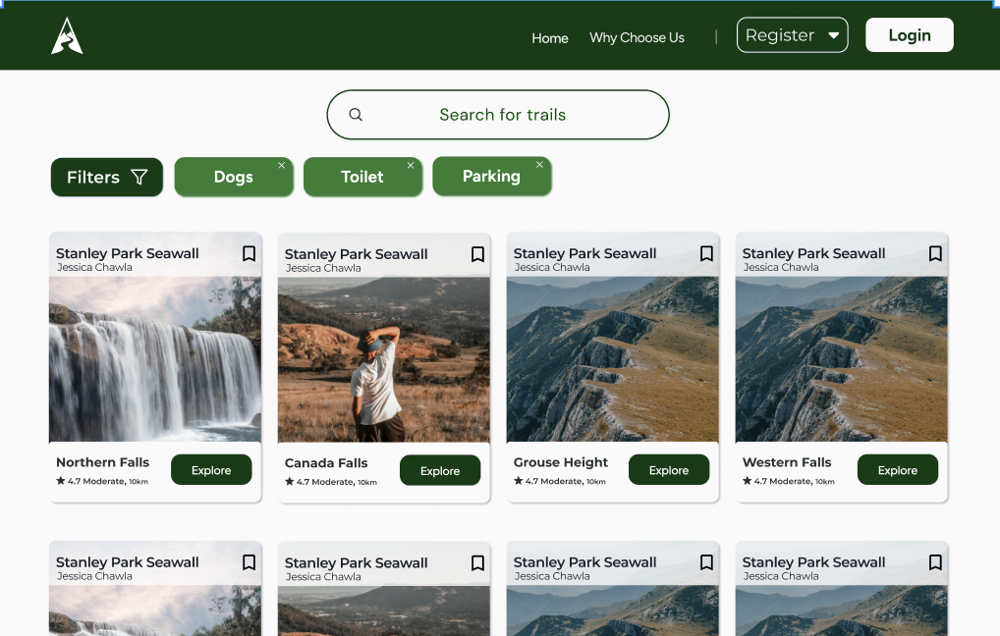

Set Location
Allow location access or choose an area.
Outdoor Adventure & Hiking App
TrailQuest is a mobile app that helps hikers discover trails, plan outdoor adventures, navigate safely, and track their hiking activities through a clear and intuitive experience.
View Figma
TrailQuest was designed for hikers and outdoor enthusiasts who need one reliable place to discover trails, compare routes, prepare for a trip, and keep track of past adventures.
The experience balances inspiration with practical safety information. Users can review trail difficulty, distance, elevation, conditions, and route details before heading outdoors, then follow navigation and record their activity during the hike.
Early wireframes focused on trail discovery, route details, trip planning, navigation, and activity tracking. The goal was to surface essential information without making the interface feel technical or overwhelming.


Hikers often move between multiple apps and websites to compare trails, check conditions, plan routes, and track activities. Important safety information can be hard to find quickly, especially while outdoors.
Trail information is scattered across multiple platforms.
Users may struggle to compare difficulty, distance, and elevation.
Navigation and safety details are difficult to access during a hike.
Past routes and hiking progress are not always easy to organize.
Browse nearby and recommended trails using clear filters for difficulty, distance, and location.
Review route details, conditions, estimated time, and essential information before leaving.
Follow the trail with an easy-to-read route map and access key information while outdoors.
Record distance, duration, completed routes, and hiking history in a personal profile.
This flow follows the primary hiking journey: finding a suitable trail, preparing, navigating safely, and recording the activity.
Allow location access or choose an area.
Browse nearby and recommended routes.
Filter by difficulty, duration, and elevation.
Review route, conditions, and safety details.
Save the trail and download the offline map.
Begin activity tracking at the trailhead.
Follow the route and monitor progress.
Complete the hike and save activity results.

The home screen helps users find nearby and recommended trails, continue saved plans, and quickly access recent activity.
Detailed trail pages present difficulty, distance, elevation, estimated time, route information, and important preparation notes in a scannable format.

Users can review the route, save a trail, prepare a trip, and organize the information they need before heading outdoors.
DM Sans + Merriweather
DM Sans keeps navigation clear and efficient, while Merriweather supports readable outdoor guidance and trail details.
Learned how to balance inspiring trail discovery with practical safety and route information.
Improved my ability to organize complex outdoor data into clear, scannable mobile screens.
Designed a connected journey that supports users before, during, and after each hike.